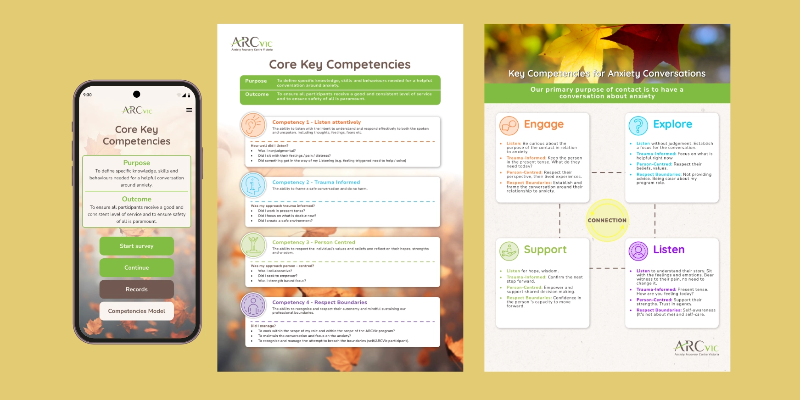
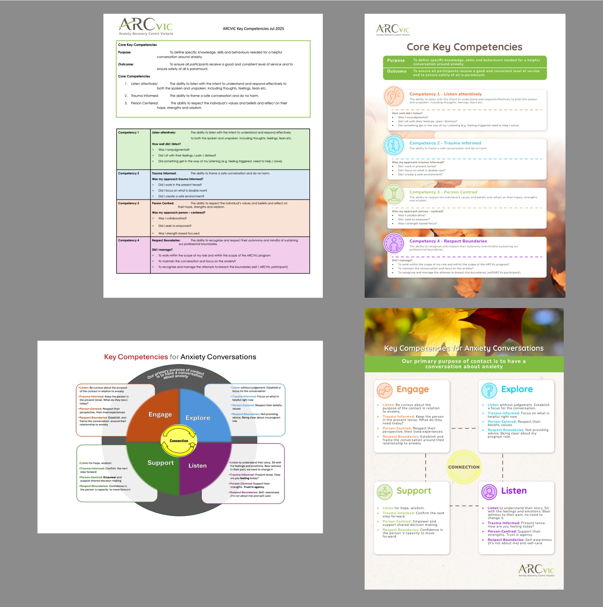
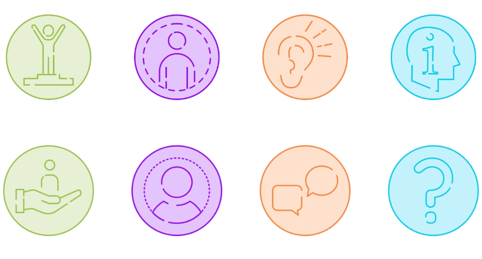
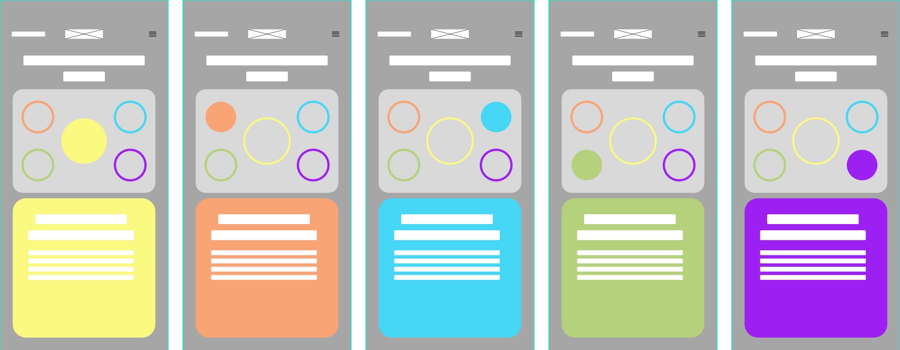
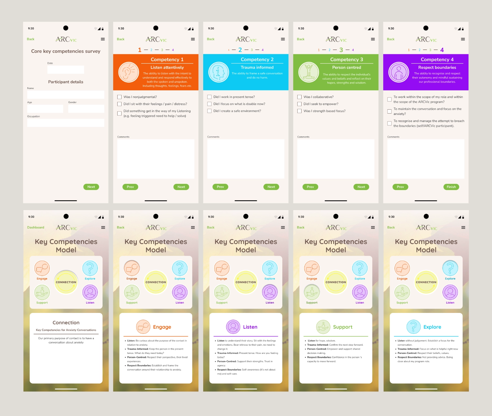
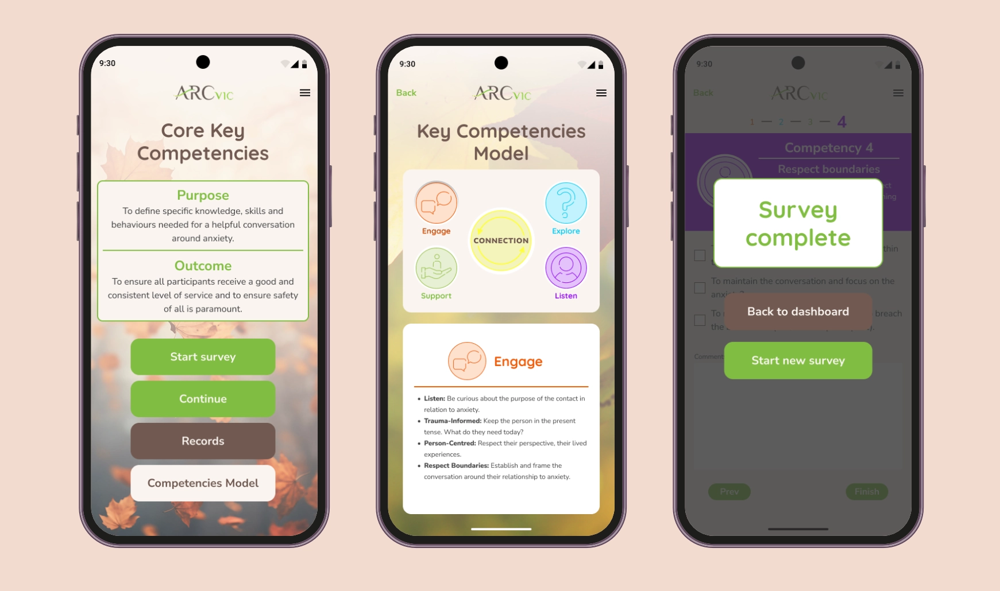
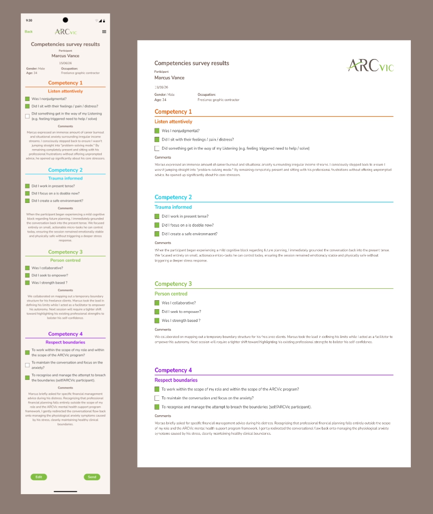

arcVIC Reference Guide
UI/UX Designer & Systems Architect
Digitizing Public Health Workflows. From Static Paper to Interactive Mobile Utility. Transforming compliance text files into a component driven mobile application for field social workers. This project bridges complex document typesetting, custom icon vector systems, and interactive state validation to replace outdated physical paper workflows.

Restructuring Clinical Constraints
Social workers operating in high pressure mental health environments require immediate, clear access to "Core Key Competencies" during client interactions. The original source material existed as dense, unoptimized text documents and unformatted data blocks that caused significant cognitive strain.
My first step was leveraging my production background in Adobe InDesign and Illustrator to organize this data hierarchy. I typeset the official reference material into crisp, highly legible structural layouts, ensuring compliance parameters were highlighted for field staff before any digital prototyping began.


Designing for Instant Recognition
To prevent cognitive overload in high stress environments, I engineered a custom vector icon system in Adobe Illustrator representing the four core competencies.
Utilizing uniform vector stroke weights and a strict color mapping strategy, these assets serve as psychological navigation anchors. This structural approach ensures instant cross interface recognition, keeping critical parameters highly accessible even when a clinician’s attention is split.
Theme Driven Interaction Loops
Engage, Explore, Support, and Listen. Rather than treating these behavioral pillars as passive text disclosures, I translated each phase into a distinct programmatic component. By coordinating dynamic themes engine the front end interface physically reflects the calm, deliberate pacing required for therapeutic anxiety conversations.

Mapping the Architecture of Compliance
Social workers are rarely sitting at a desk; they operate in vehicles, community centers, and participant homes where a desktop portal fails them. To ensure zero data drop off, I mapped out a mobile first user flow and rigid system logic tree before drafting UI layouts.
The resulting architecture splits user intents into two clean pathways stemming from a central dashboard: a linear interactive survey wizard and a modular reference portal. By isolating individual step validation checkpoints, the flow guarantees that field staff can log summaries or check regulatory criteria in real time without getting lost in deep nesting menus.

Translating Print Logic into App Components
I transitioned into Figma to reimagine the workflow as a fully interactive mobile application. To translate my print design layout rules into dynamic screens, I built a rigid component library utilizing global color styles, modular progress tickers, and explicit field input states.
The mobile interface features an interactive core survey wizard that allows social workers to check off operational criteria dynamically in real time, record qualitative session updates, and view survey results instantly, cutting down administrative burden after a field session closes.

Interactive High-Fidelity Ecosystem
The finalized interface translates static clinical criteria into an empathetic, production ready product. The landing screen establishes a clear starting point by splitting user intents into actionable primary buttons.
When launching the Key Competencies Model, users interact with a responsive layout. Upon task completion, the validation flow triggers a clear, structural state confirmation modal securely handling data submission states.

Multi Channel Compliance Reporting
I engineered a dual output framework that formats a single dataset into two distinct mediums. While social workers view instant insights on an optimized mobile summary, administrative managers receive a print ready A4 document.
Leveraging a decade of print production discipline, I designed this export template with rigorous grid margins and typographic hierarchies.
